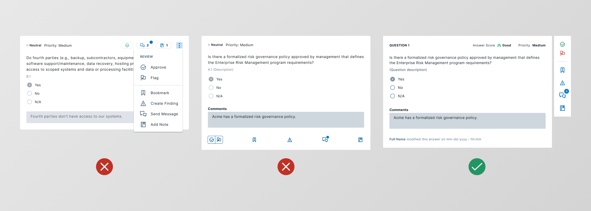
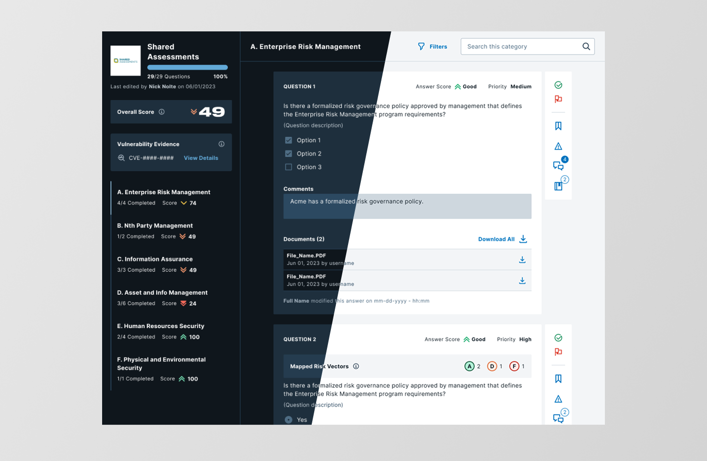
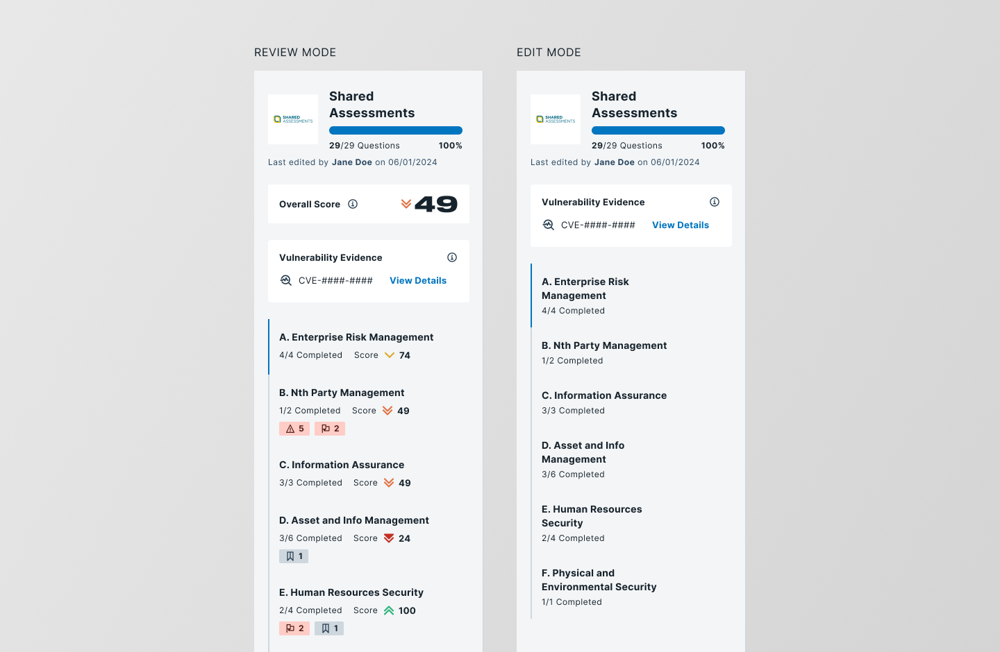
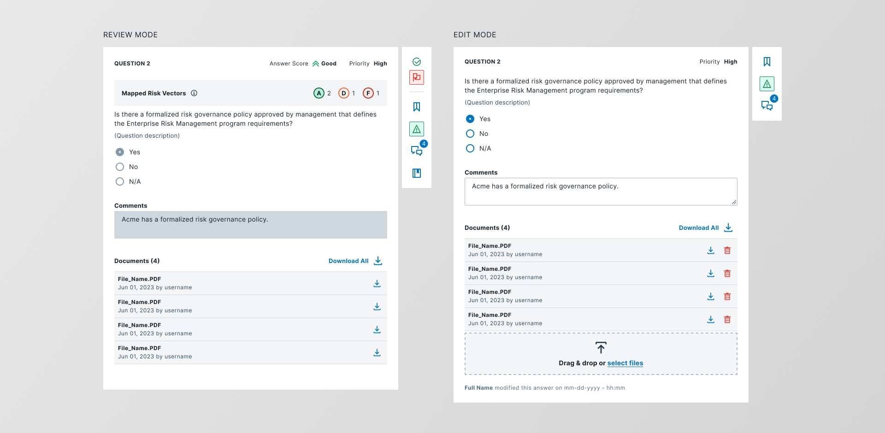

After Bitsight acquired ThirdPartyTrust, the questionnaire feature needed more than a visual refresh — it needed a new foundation. I led the UI redesign and research plan for a complex, high-stakes workflow used by security teams every day.
A feature inherited from an acquisition
In Q3 2022, Bitsight acquired ThirdPartyTrust — a vendor risk management platform with its own established product and user base. As part of the integration, the Questionnaires feature needed to be rebuilt inside Bitsight's product ecosystem: redesigned from scratch using the Bitsight Design System, with better accessibility, clearer usability, and feature parity with the original.
Questionnaires are central to how security teams manage vendor risk. They come in three forms: custom questionnaires built by the team for specific assessments, internal questionnaires used for scoping during vendor intake and reassessment cycles, and industry-standard templates like CAIQ v4, ISO 27001:2022, and SIG Core.
This wasn't a greenfield project — it was a migration with real users watching. The design had to earn trust from people who already had a workflow, muscle memory, and strong opinions about how the tool should behave.
The team
Feature parity isn't enough — it has to be better
The original platform had been built using its own framework, before Bitsight's design system existed. Visual inconsistencies were everywhere, accessibility was not a priority, and some workflows required too many steps to accomplish basic tasks. At the same time, users had deep familiarity with the old interface — which meant every change needed a reason strong enough to justify the disruption.
The challenge had three parts. First, align the interface with Bitsight's design system without losing the features users depended on. Second, improve usability and accessibility across a complex, multi-part workflow. Third, do it iteratively — delivering features in planned cycles while the product was already in use.
What the redesign had to cover
Question + description, multiple answer types (select, multiselect, values), vendor comments, uploaded documents, audit trail of changes.
Overall score calculated from answer and priority weighting. Progress tracking across the questionnaire lifecycle.
Risk Vectors added to individual questions. Vulnerability Evidence added at the questionnaire level.
Per-question tools: review (approve/flag), bookmark, finding creation, messaging with vendors, internal notes.
Two studies, two different angles
Before committing to a direction, I designed a two-study research plan. The goal was to validate usability with real users while also getting structured expert feedback on our design decisions early — before reaching users.
Sessions with existing users of the ThirdPartyTrust platform. Participants completed representative tasks using the new design and verbalized their reactions. Primary metrics: task success rate, time on task, error patterns, and qualitative feedback.
A structured heuristic review with internal company stakeholders. PURE (Practical Usability Rating by Experts) uses a defined set of criteria to surface usability issues before external testing — faster and cheaper than waiting for real users to find them.
What we found
The usability test results were encouraging: participants completed all tasks successfully and responded positively to the new interface. One of the most common reactions was around the question tools — the actions were clearer and easier to reach than in the original product.
- All tasks completed successfully. Existing users navigated the redesigned interface without significant errors. The general reaction was that actions felt "more clear and easy to use."
- Bulk document download. Users needed to download all documents from a questionnaire at once — but the system required them to do it one by one, per question. A recurring and painful friction point.
- Cross-category filtering. Categories were rendered client-side, which limited filtering to within each category. Users expected to filter across the full questionnaire — a structural constraint from engineering, not design.
- User-built questionnaires. Users wanted to build questionnaires themselves. In the current state, questionnaires were created on demand by the Customer Success team — a bottleneck users found frustrating.
The last two pain points were highly requested — but low feasibility for engineering at that stage. They went into the backlog with clear rationale. Honest prioritization is part of good research communication.
Bulk document download workaround, improved flag filtering, clearer question tools, review flow redesign.
Cross-category filtering, user-built questionnaire creation — added to product backlog with documented rationale.
Iterating toward the right answer
The design process was structured around planned delivery cycles — each iteration scoped to a set of features that could be shipped independently. This meant making decisions about what to finalize early and what to keep flexible as we learned more.
Feature inventory first
Before starting any new designs, I ran a complete inventory of the existing platform: every feature, every interaction state, every edge case. This gave the team a shared map of what existed and what had to be accounted for — and revealed several features that had no clear home in the new layout.
Question tools: the hardest interaction design problem
Each question in a questionnaire can have up to five independent tools associated with it: review (approve or flag), bookmark, finding creation, messaging, and internal notes. In the old platform, these were scattered and inconsistently placed. Users had to hunt for them.
I explored several layout approaches before landing on a solution. The key tension was between discoverability — making tools visible enough that users knew they existed — and density — keeping the question interface readable when dozens of questions are stacked in sequence.

Three layout proposals for question-level tools. The vertical rail balanced visibility with density and became the foundation for the final design.
The chosen solution — a vertical action rail anchored to each question — kept tools consistently reachable without competing with question content. Actions are always in the same place, regardless of question length or answer type.
Light and dark themes, ready at launch
Because this project ran in parallel with the design token adoption work, the questionnaire became one of the first features to be fully tokenized. Every component in the redesign referenced semantic tokens — which meant both light and dark mode were supported from the start, with no separate design files and no duplication.

The four-part naming convention: class · foundation · property · modifier. Each segment answers one question about how the token should be used.
Collaboration with the vendor-side team
The questionnaire feature has two sides: the reviewer experience (what security teams see) and the respondent experience (what vendors see). I was responsible for the reviewer UI, and collaborated closely with the TMH team who owned the vendor-facing design. Keeping both sides consistent required ongoing alignment — shared components, shared tokens, and regular cross-team reviews.

insert caption

insert caption
A complex feature, delivered in pieces that held together
The redesign shipped progressively across planned delivery cycles. Each iteration was tested or reviewed before the next began — which meant problems were caught early, not after everything was built. At the end of the process, two research studies, a complete feature redesign, and a set of reusable components were delivered.
The usability test results validated the core direction: all tasks were completed successfully, and participants responded positively to the new tool layout. The pain points surfaced in research were documented, triaged, and communicated to the product team with clear feasibility context.
What this project taught me
-
1
Inventory before ideation
Starting with a complete feature audit prevented redesign blind spots. Every edge case we documented in the inventory saved a conversation later when a developer asked "what about this state?"
-
2
Two research methods are better than one
The PURE evaluation caught issues before users ever saw the design. The usability test validated what survived. Running both gave a fuller picture than either study would have provided alone.
-
3
Prioritization is a design skill too
Not every pain point can be solved in the same release. Communicating clearly which problems were deprioritized — and why — kept stakeholder expectations realistic and gave the backlog real shape.
-
4
Token-first design pays off fast
Building on the design token system meant light and dark mode were never separate design tasks. That decision, made early, saved real time during delivery and kept both themes consistent without extra effort.
-
5
Cross-team alignment needs structure
Collaborating with the TMH team on the vendor side required intentional touchpoints. Without regular cross-team reviews, components would have diverged silently. Consistency doesn't happen by accident — it needs a process.